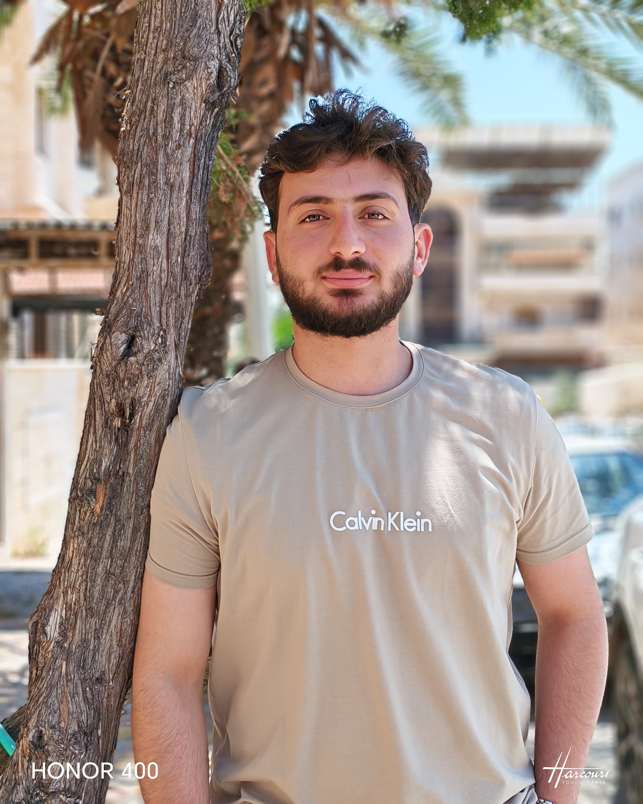

طالب هندسة شبكات | المعهد التقني للحاسوب - جامعة حماة
شاب عمري 22 سنة، أدرس اختصاص هندسة الشبكات في المعهد التقني للحاسوب بجامعة حماة. مهتم ومتعمق في مجال البنية التحتية للشبكات، وأسعى لبناء مسار مهني متقدم في مجال الأمن السيبراني (Cybersecurity) وتأمين البيانات، مع الاهتمام بتطوير مهارات الويب وتحليل البيانات.
| التخصص / المؤهل | الجامعة / الكلية | الحالة |
|---|---|---|
| هندسة الشبكات | جامعة حماة - المعهد التقني للحاسوب | طالب حالي |
| الشهادة | مستوى الإتقان / التخصص | الحالة |
|---|---|---|
| Advanced Excel | إكسل الاحترافي (تحليل البيانات، المعادلات المتقدمة) | مكتملة (شهادة دولية) |
| ICDL | الرخصة الدولية لقيادة الحاسب الآلي | مكتملة (شهادة دولية) |